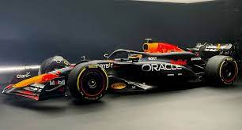
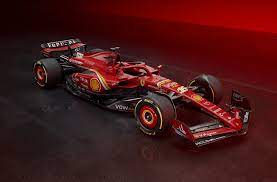
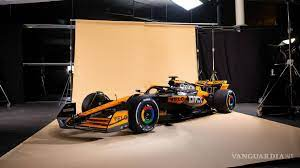
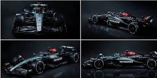

Red Bull Racing-Honda RBPT RB20
Sus pilotos con sus respectivos numeros de competicion #1 Max Verstappen #11 Sergio Pérez
Red bull racing es una escudería austriaca de Fórmula 1 con base en Milton Keynes, Inglaterra, propiedad de la empresa de la bebida energizante Red Bull GmbH. La compañía adquirió la escudería Jaguar Racing por cerca de US$110 000 000, cuando la propietaria anterior de este equipo Ford Motor Company, anunció su retirada de la máxima categoría del automovilismo. Red Bull también tiene otro equipo subsidiario de Fórmula 1, llamado Visa Cash App RB, conocida hasta 2023
Astom Martin Aramco-Mercedes AMR24
Sus pilotos con sus respectivos numeros de competicion #14 Fernando Alonso #18 Lance Stroll
Aston Martin Racing es un equipo británico de automovilismo establecido en 2004 como sociedad entre fabricante de automóviles Aston Martin y grupo de ingeniería Prodrive. La sociedad fue inicialmente creada con el propósito de hacer regresar a Aston Martin al automovilismo con el DBR9, una variante fuertemente modificada del Aston Martin DB9. Desde el debut del DBR9 en 2005, Aston Martin Racing se ha expandido para construir una variedad de coches disponibles a clientes, así como desarrollo del Motor V12 de Aston Martin para el uso en Prototipos de Le Mans. Aston Martin Racing ha conseguido varios éxitos a lo largo de los últimos años.

Ferrari SF-24
Sus pilotos con sus respectivos numeros de competicion #16 Charles Leclerc #55 Carlos Sainz
El equipo ferrari es la entidad con más historia de la Fórmula 1, con un legado que se remonta a la temporada inaugural de 1950 y un nutrido palmarés compuesto por dieciséis títulos del Mundial de Constructores y quince del de Pilotos. Enzo Ferrari fundó la entidad en 1929, que en sus inicios ejerció como equipo privado. En 1933, su formación se convirtió en el esfuerzo de fábrica de Alfa Romeo. En 1937, Alfa Romeo compró las acciones de la Scuderia Ferrari y transfirió su actividad a la división de Alfa Corse. Enzo Ferrari dejó la empresa en 1939.
Mclaren-Mercedes MCL38
Sus pilotos con sus respectivos numeros de competicion #4 Lando Norris #81 Oscar Piastri
McLaren Racing Limited, conocida comúnmente como McLaren, es una escudería británica de automovilismo con sede en Woking, Inglaterra. Fue fundada en 1963 por el piloto neozelandés Bruce McLaren, en sociedad con los estadounidenses Teddy Mayer y Tyler Alexander. Es considerado uno de los cuatro grandes equipos de Fórmula 1, junto con Williams, Ferrari y Mercedes. A lo largo de los años ha obtenido doce veces el Campeonato Mundial de Pilotos (segunda en el historial), ocho veces el Campeonato Mundial de Constructores (tercera), 183 victorias (segunda), 155 poles (segunda) y 489 podios (segunda).
Mercedes F1 W15
Sus pilotos con sus respectivos numeros de competicion #44 Lewis Hamilton #63 George Russel
Mercedes-Benz es una de las automotrices más exitosas de la Fórmula 1, considerada uno de los cuatro equipos con mejores resultados, junto con Williams, Ferrari y McLaren. Participó inicialmente como constructor en Fórmula 1 en 1954 y 1955, y volvió a hacerlo desde 2010 hasta la actualidad. El equipo alemán ganó ocho Campeonatos de Constructores de forma consecutiva (de 2014 a 2021). Es la tercera escudería que posee más Campeonatos de Pilotos, con 9 (1954, 1955, 2014, 2015, 2016, 2017, 2018, 2019 y 2020)
